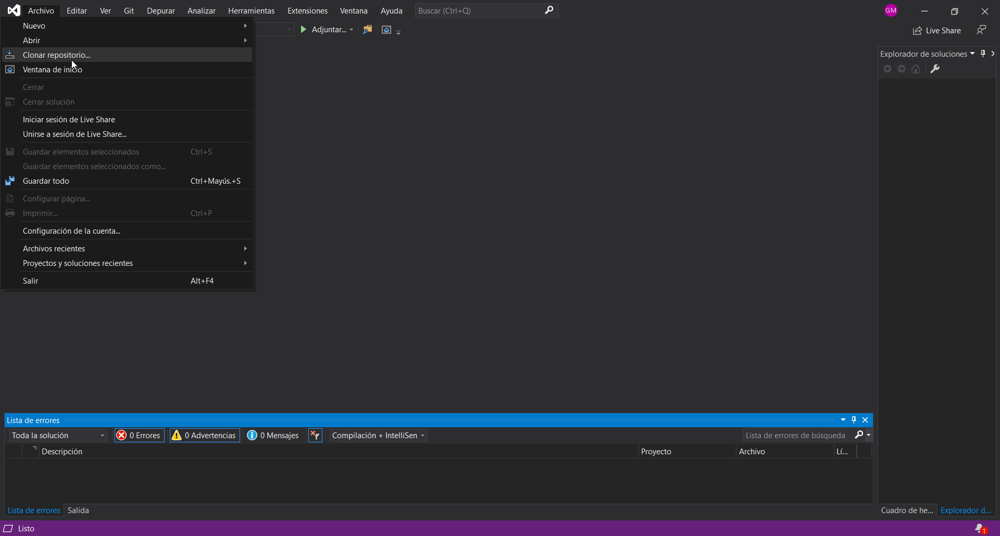
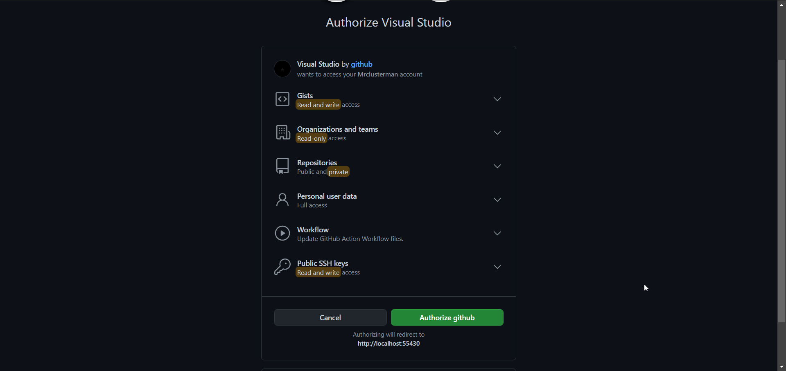

1 / 4

Desde el propio Visual Studio podremos clonar repositorios desde Git de forma local o de desde GitHub añadiendo la cuenta
2 / 4

Desde Archivo > Clonar repositorio > GitHub podremos añadir nuestra cuenta.
3 / 4

Antes de poder utilizar los repositorios de GitHub debemos autorizar desde el navegador el acceso de Visual Studio a GitHub
4 / 4

Una vez realizados los pasos anteriores ya se pueden clonar y publicar los repositorios desde el propio Visual Studio
❮
❯